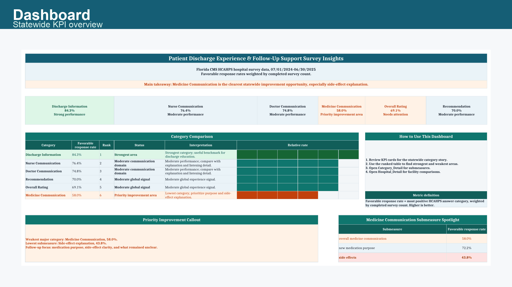
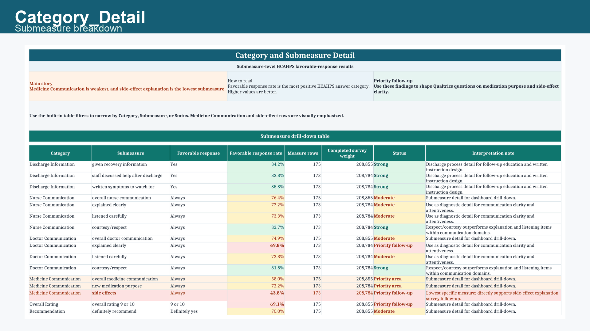
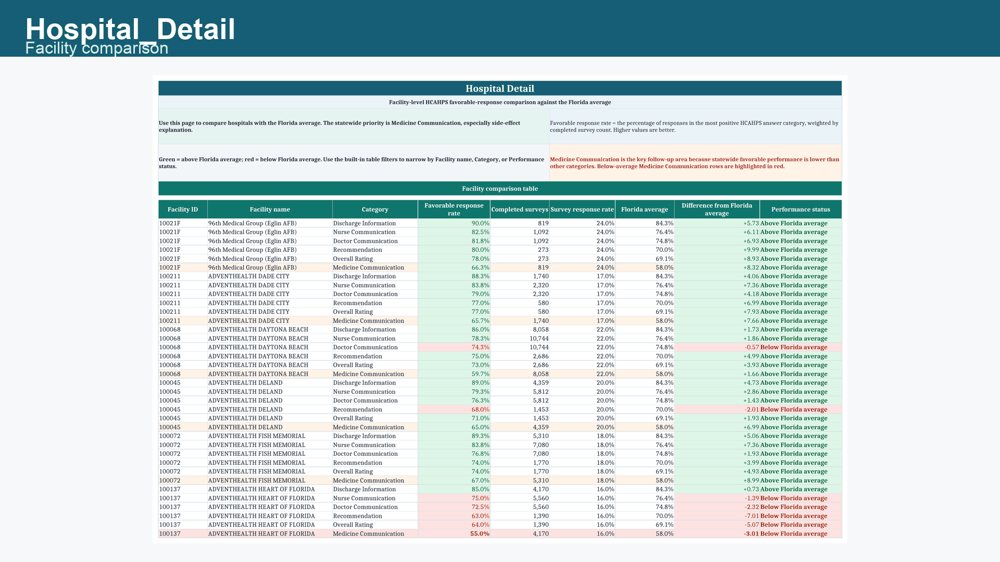
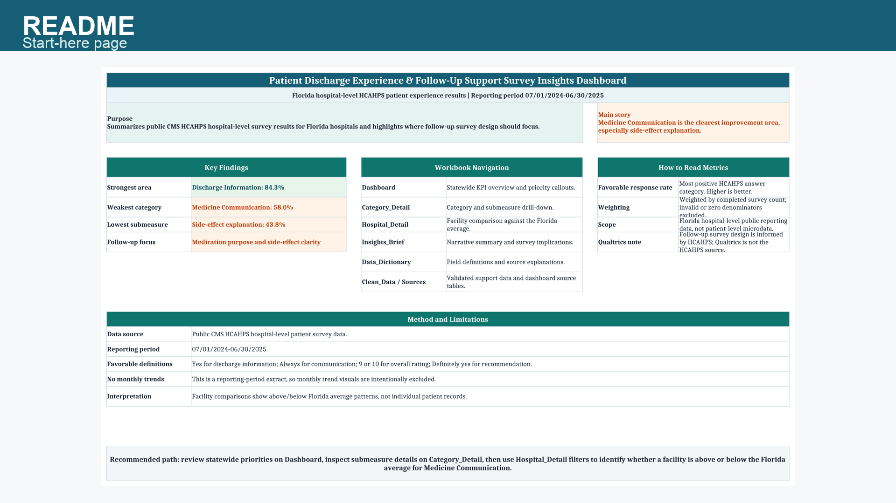

Florida CMS HCAHPS | Reporting period 07/01/2024-06/30/2025
HCAHPS Patient Experience Dashboard
Excel dashboard for Florida HCAHPS results. Main finding: Medicine Communication is the priority follow-up area.
Page flow
How to read this project
- Preview
- Workbook
- Insights
- Navigate
- Report
1. Excel preview
Actual workbook preview
Rendered from the Excel file.
2. What the Excel provides
What the workbook provides
Statewide summary -> submeasure detail -> hospital benchmark.
Dashboard
Statewide executive view
Ranks major categories and flags the priority area.

Category_Detail
Submeasure diagnosis
Shows which submeasures drive the category result.

Hospital_Detail
Facility benchmark comparison
Compares each facility with the Florida average.

README and source tabs
Transparent workbook structure
Documents scope, definitions, and source tables.
3. Insights from the Excel
Key dashboard insight
Higher favorable response rates are better.
5. Report and Qualtrics direction
Use HCAHPS to target patient-level follow-up.
The report connects dashboard findings to Qualtrics implementation questions.
Survey domains
- New or changed medication at discharge
- Who explained purpose and side effects
- When and how the explanation occurred
- Verbal, written, portal, caregiver, or no explanation
- Teach-back and patient understanding
- Who to contact after discharge
Implementation question
If nurse and doctor communication are relatively high, why is side-effect explanation low?
Decision map
Survey to action
Each domain maps to an operational lever.
| Survey domain | What it diagnoses | Possible hospital investment |
|---|---|---|
| Role ownership | Whether patients know who explained side effects | Clarify doctor, nurse, pharmacist, and discharge staff responsibilities |
| Timing | Whether medication education happens early enough to absorb | Move medication counseling earlier in discharge workflow |
| Format | Whether education is verbal, written, portal-based, or only patient-initiated | Standardize verbal explanation plus plain-language written materials |
| Patient understanding | Whether patients know urgent side effects and next steps | Staff teach-back training and clearer side-effect scripts |
| Follow-up support | Whether patients know who to contact after discharge | Post-discharge call, text, portal message, or hotline workflow |
Artifacts
Workbook and companion report
Download the workbook or read the full insight breakdown.